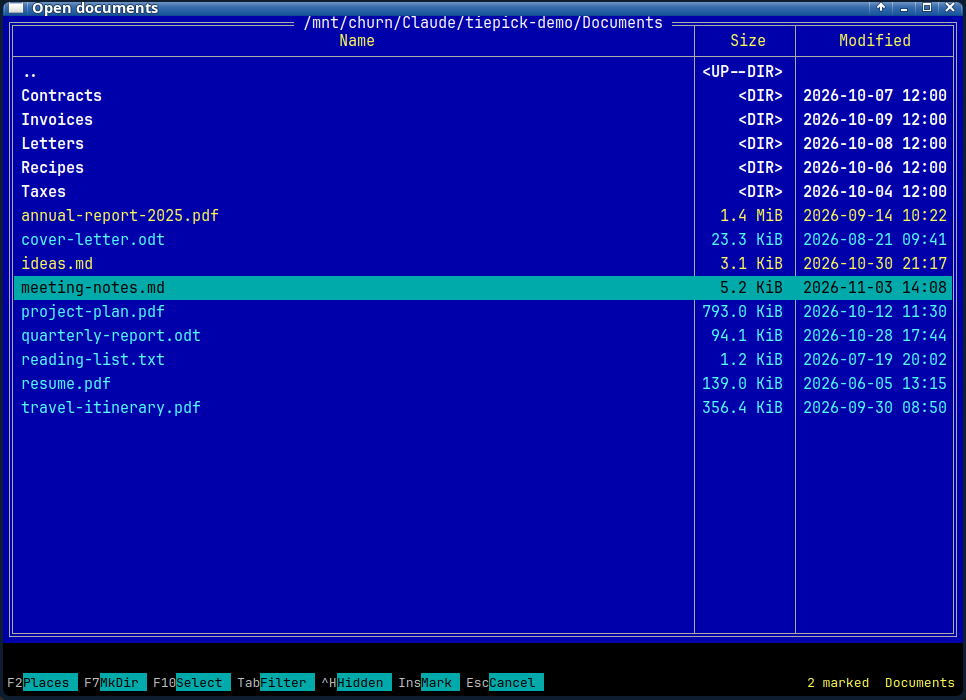
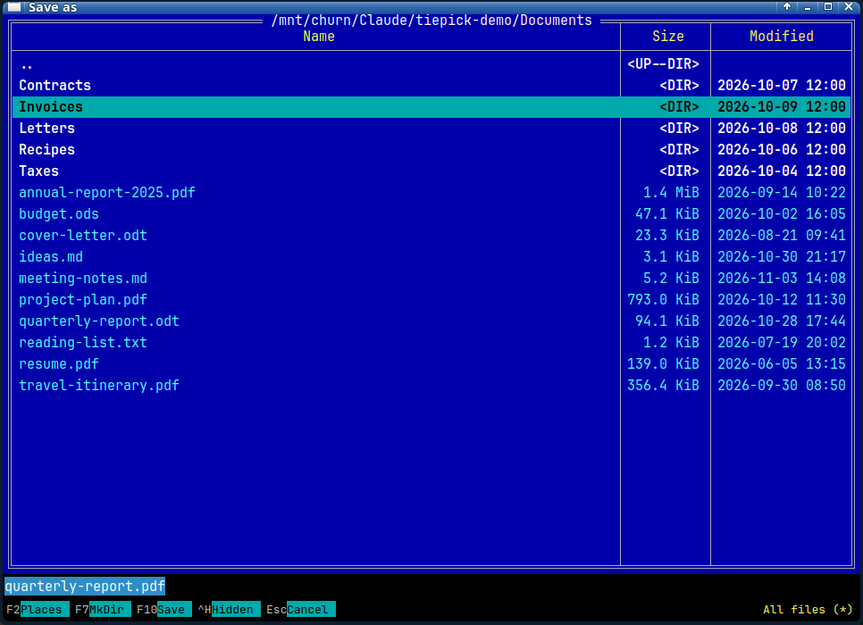
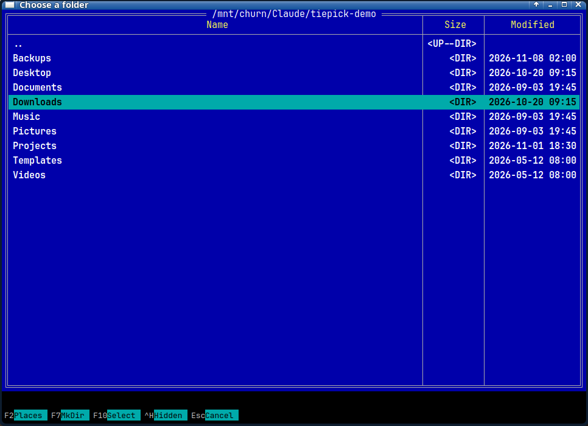

What it does
tiepick plugs into xdg-desktop-portal as the file chooser. Apps that ask the desktop portal for an Open or Save dialog, such as browsers, Electron apps and Flatpaks, get this one instead of the toolkit's own.
Keyboard first
Arrows move, Enter opens, Backspace goes up a folder. Whatever you type lands in the line at the bottom, like Far's command line.
One pane, nothing extra
It only picks. No copying, moving or deleting, and no previews to wait for. Open it, choose, done.
Marks several files
Open dialogs that allow more than one file let you mark with Insert and accept with F10.
File-type filters
Press Tab to cycle the filters the app offers. An "All files" entry is always there.
Save keeps your name
Walk into another folder and the suggested file name stays put. Press Enter to save, or F7 to make a folder first.
Places and hidden files
F2 jumps to home, your mounted drives and GTK bookmarks. Ctrl+H shows hidden files.
Keys
The ones you will use every day.
| ↑↓PgUpPgDn | Move the highlight |
| Home or ← | Jump to the top of the list (while the typing line is empty) |
| End | Jump to the bottom |
| Enter | Open the highlighted folder, or accept the highlighted file |
| Backspace | Up to the parent folder (while the typing line is empty) |
| type | Jumps to a matching name. Type a path such as /mnt/data and press Enter to go there |
| Insert Space | Mark or unmark a file (dialogs that allow several) |
| Tab | Next file-type filter |
| F2 | Places: home, drives, bookmarks |
| F7 | Make a new folder |
| F10 | Accept: Open, Save, or choose this folder |
| Esc | Clear the typing line, then cancel |
Get it
tiepick is free software under the MIT licence. The code, the README and the issue tracker are on GitHub.
Build from source
You need Free Pascal and Lazarus with the Qt5 widgetset, plus libdbus.
git clone https://github.com/zead73/tiepick cd tiepick lazbuild --ws=qt5 tiepick.lpi
The README has the few files to put in your home folder, and the one line that tells the portal to prefer tiepick. Keep another file chooser after it in that line, so you still get a dialog if tiepick is ever missing.
Debian and Ubuntu
The repository includes a script that builds a .deb inside a clean Debian container, and a small tiepick-enable command that turns it on for your user and can turn it off again. There is no ready-made download yet, so you build the package yourself.
Where it has been tried
- Arch Linux, LXQt on X11, with the Vivaldi browser
- The Debian 13 package, on a laptop running LXQt
Good to know
- It only affects apps that use the desktop portal. GTK apps usually need
GTK_USE_PORTAL=1, and some Qt setups use their own dialog. - It does not remember the last folder. The app chooses where it starts.
- Filters match file name patterns such as
*.png. Filters that only name a MIME type are ignored. - Only X11 has been tried so far.